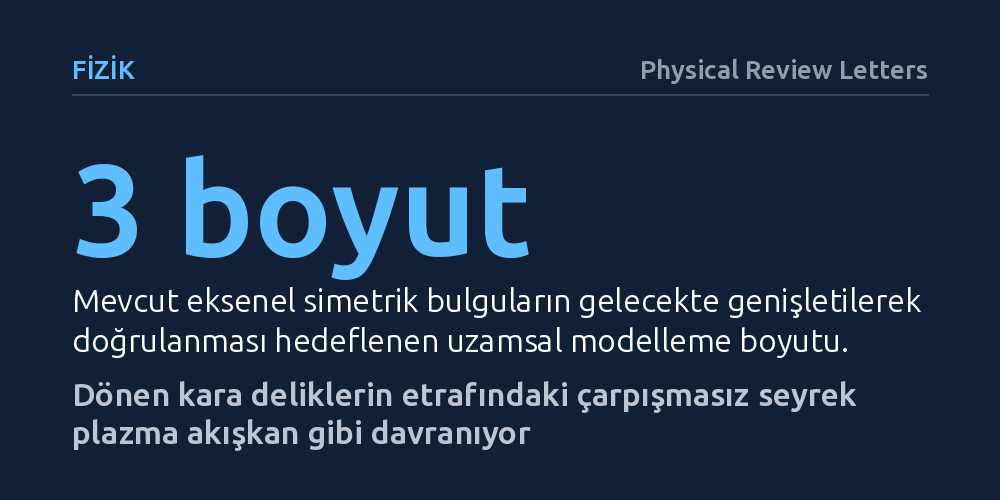

FIZIK · Physical Review Letters · 2026-10-08
Araştırmacılar, dönen kara deliklerin çevresindeki seyrek plazmanın akışkan modellerinden sapıp sapmadığını ilk tam kinetik simülasyonla inceledi. Çarpışmasız bu plazmanın manyetik tıkanma rejiminde standart akışkan modellerine şaşırtıcı biçimde benzediği ve jet hunisine madde sızdırmadığı bulundu.
Kara delik gözlemlerini yorumlamak için kullanılan standart akışkan modellerinin, parçacık çarpışmalarının neredeyse hiç yaşanmadığı aşırı seyrek ortamlarda bile güvenilir sonuçlar verdiğini gösteriyor.

Gökadamızın merkezindeki Sagittarius A* veya M87 gibi dev kütleli kara deliklerin çevresi, evrenin en uç ortamları arasındadır. Bu bölgelerdeki gaz ve plazma o kadar sıcak ve aşırı seyrektir ki, elektrik yüklü parçacıklar neredeyse hiçbir zaman birbiriyle doğrudan çarpışmaz. Astrofizikçiler uzun yıllardır bu devasa sistemleri bilgisayarlarda modellerken, gazın birbirine çarpan moleküllerden oluştuğu 'ideal akışkan' varsayımını kullandı. Ancak birbirine temas dahi etmeyen serbest parçacıkların gerçekten bir su veya gaz akıntısı gibi davranıp davranmayacağı uzun süredir temel bir kuramsal belirsizlikti.
Bu sorunun yanıtı yalnızca soyut bir fizik tartışması değildir; Olay Ufku Teleskobu gibi projelerle elde ettiğimiz kara delik fotoğraflarını doğru anlayıp anlamadığımızı da doğrudan etkiler. Eğer çarpışmasız plazma bilinen akışkan modellerinden farklı dinamiklere sahipse, kara deliklerin kütlesi, dönme hızı ve çevrelerindeki manyetik alanlara dair mevcut hesaplamalarımızın güvenilirliği tartışmalı hale gelebilir. Araştırmacılar, basitleştirici akışkan varsayımlarını bir kenara bırakarak parçacıkların gerçek davranışını doğrudan test etme ihtiyacı duydu.
Bilim insanları bu gizemi çözebilmek için dönen bir kara deliğin etrafındaki plazmayı modelleyen ilk tam kinetik simülasyonu gerçekleştirdi. Geleneksel modeller plazmayı bir bütün halinde sürekli bir sıvı gibi ele alırken, kinetik yaklaşım elektrik yüklü parçacıkları ve onların yarattığı elektromanyetik alanları temel fizik yasalarıyla doğrudan hesaplar. Üstelik bu çalışmada plazmaya gerçek astrofiziksel sistemlerde olduğu gibi başlangıçta bir açısal momentum, yani dönme hareketi kazandırıldı.
Muazzam hesaplama maliyeti nedeniyle araştırma şimdilik iki boyutlu eksenel simetri çerçevesinde yürütüldü. Bu yöntem, kara deliğin dönme ekseni etrafında simetrik bir yapı varsayarak bilgisayarların milyarlarca parçacık hareketini ve alan denklemini çözebilmesine imkân tanıdı. Böylece plazmanın içindeki mikroskobik hareketlerin, kara deliğin devasa çekim gücü ve manyetik alanlarıyla nasıl etkileştiği ilk kez akışkan varsayımına sığınmadan incelendi.
Simülasyonun sonuçları fizikçileri oldukça şaşırtan bir tablo ortaya koydu: Parçacıklar birbirine hiç çarpmadığı halde, plazma akışı standart akışkan modelleriyle neredeyse tıpatıp aynı davrandı. Kara deliğin etrafındaki manyetik alan zamanla güçlenerek plazmanın içeri düşüşünü frenledi ve 'manyetik olarak tıkanmış disk' adı verilen rejimi oluşturdu. Tıpkı sıvı modellerinde öngörüldüğü gibi, manyetik alan doygunluğa ulaştığında düzenli aralıklarla şiddetli manyetik patlamalar yaşandı ve plazma halkaları uzaya savruldu.
Birbirine çarpmayan parçacıkların kolektif bir sıvı gibi davranabilmesinin arkasında 'kinetik kararsızlıklar' adı verilen mikroskobik süreçlerin yattığı anlaşıldı. Parçacıkların farklı yönlerdeki basınç dengesizlikleri plazmada kendiliğinden dalgalanmalar tetikliyor ve bu dalgalanmalar basıncı hızla eşitleyerek parçacık çarpışmalarının yerini alıyordu. Sonuç olarak, açısal momentumun dışa aktarılması ve maddenin içeri düşüşü tıpkı klasik bir akışkandaki gibi gerçekleşti.
Çalışmanın bir diğer önemli bulgusu, kara deliklerin kutuplarından fışkıran devasa plazma jetlerinin nasıl beslendiğiyle ilgilidir. Kinetik simülasyon, madde yoğunluğunun sıfıra yaklaştığı boşluk bölgelerini başarılı bir şekilde ele alarak jet hunisinin içine baktı. Elde edilen verilere göre, kara deliğin etrafında dönen ana disk maddesi bu jet hunisinin içine doğrudan ve etkin bir biçimde sızamıyordu.
Bu bulgu, kutup jetlerinin dönen kara delikten enerji çekebilmesi için boşlukta kendiliğinden elektron ve pozitron çiftlerinin üretildiği kuantum süreçlerine ihtiyaç duyulduğunu gösteriyor. Araştırmacılar, elde edilen bu ilk bulguların son derece değerli bir temel oluşturduğunu, ancak eksenel simetri varsayımının ötesine geçilerek üç boyutlu modellerle doğrulanması gerektiğini vurguluyor.